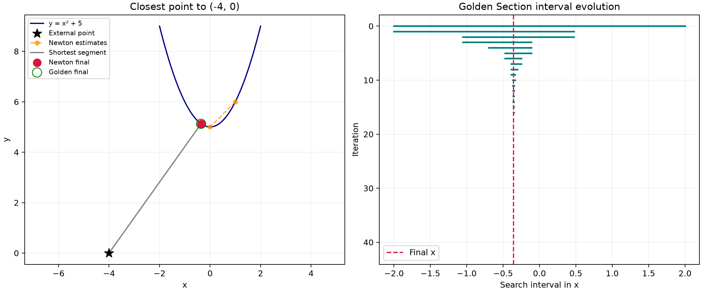
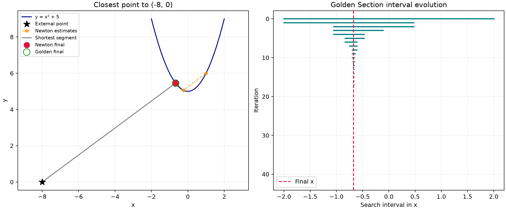
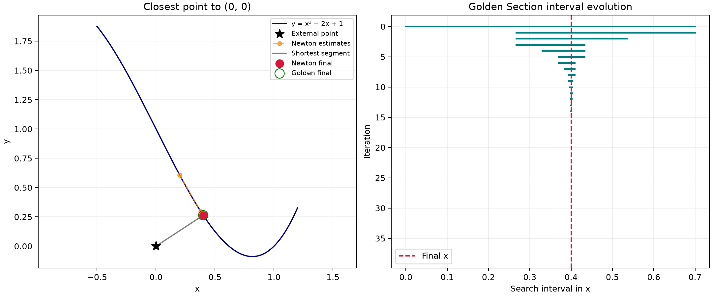
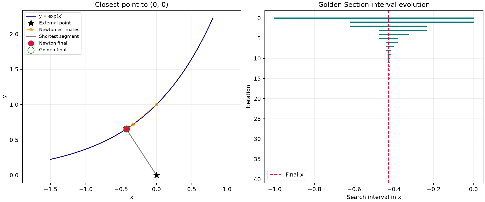
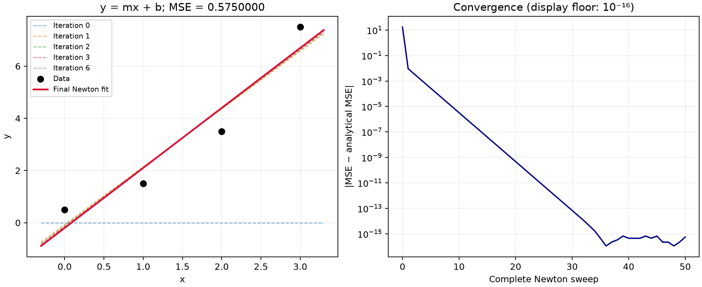
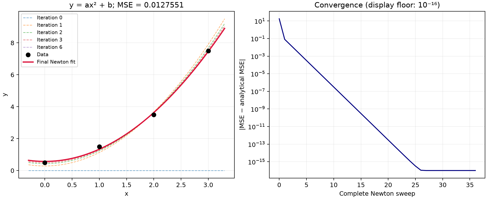

Newton–Raphson
xₙ₊₁ = xₙ − D′(xₙ) / D″(xₙ)
Uses the first and second derivatives of distance. The initial guess matters; convergence to a local minimum does not guarantee a global minimum.
Assignment 1 · Numerical optimization
Finding the nearest point on a curve and fitting models to data, with manually implemented numerical methods.
Part 01
View handwritten Part 1 (PDF, opens in a new tab) ↗
For an external point P = (x₀, y₀), minimize the squared Euclidean distance to (x, f(x)).
xₙ₊₁ = xₙ − D′(xₙ) / D″(xₙ)
Uses the first and second derivatives of distance. The initial guess matters; convergence to a local minimum does not guarantee a global minimum.
r = 2 − (1 + √5) / 2
Shrinks the search interval while reusing an interior function evaluation. The distance objective must be unimodal within the chosen interval.
The required curve is f(x) = x² + 5. Every parabola run starts Newton at x = 1 and Golden Section on [−2, 2].
| Example / external point | Newton x | Golden x | Distance | Newton updates |
|---|---|---|---|---|
| Parabola · (0, 0) | 0.000000000 | 0.000000022 | 5.000000000 | 4 |
| Parabola · (−4, 0) | -0.355469693 | -0.355469673 | 6.289845364 | 5 |
| Parabola · (−8, 0) | -0.672078127 | -0.672078112 | 9.133419514 | 5 |
| Parabola · (2, 0) | 0.180744604 | 0.180744604 | 5.351396411 | 4 |
| Parabola · (6, 0) | 0.519903661 | 0.519903674 | 7.603125413 | 4 |
| Cubic · (0, 0) | 0.400324669 | 0.400324671 | 0.479265672 | 4 |
| Exponential · (0, 0) | -0.426302751 | -0.426302750 | 0.779767136 | 5 |
The cubic f(x) = x³ − 2x + 1 uses an initial guess of 0.2 and interval [0, 0.7]. The non-polynomial example f(x) = eˣ uses an initial guess of 0 and interval [−1, 0]; both derivatives are eˣ. Both examples use external point (0, 0).







Part 02
View handwritten Part 2 (PDF, opens in a new tab) ↗
Data: (0, 0.5), (2, 3.5), (1, 1.5), (3, 7.5). Each complete Newton sweep updates the coefficient first, then the intercept using the new coefficient. Both parameters begin at zero.
y = 2.3x − 0.2
MSE: 0.575 · 50 Newton sweeps
y ≈ 0.765306x² + 0.571429
MSE: 0.0127551 · 36 Newton sweeps
The parabola uses the two-parameter form ax² + b specified in the handoff. Analytical solutions come from the normal equations. Numerical fitting stops when both MSE partial derivatives have magnitude ≤ 10⁻¹⁰.


Reproduce the results
Python, NumPy and Matplotlib. No SciPy optimizers. The source retains initial estimates and every completed iteration.
The tests check independent least-squares solutions, expected early fitting iterations, distance stationarity, interval contraction and failure statuses.